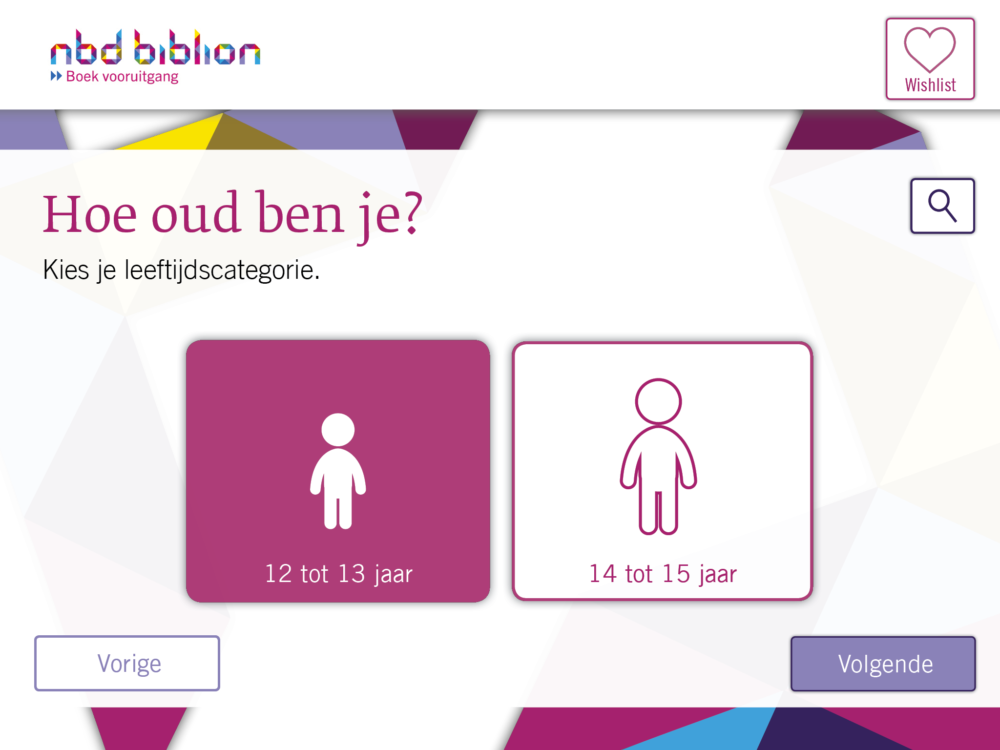
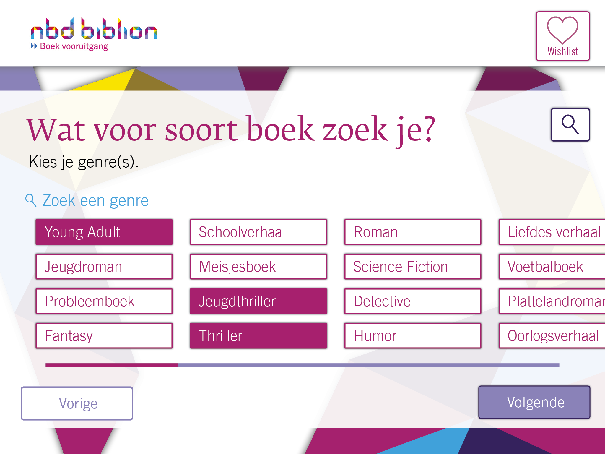
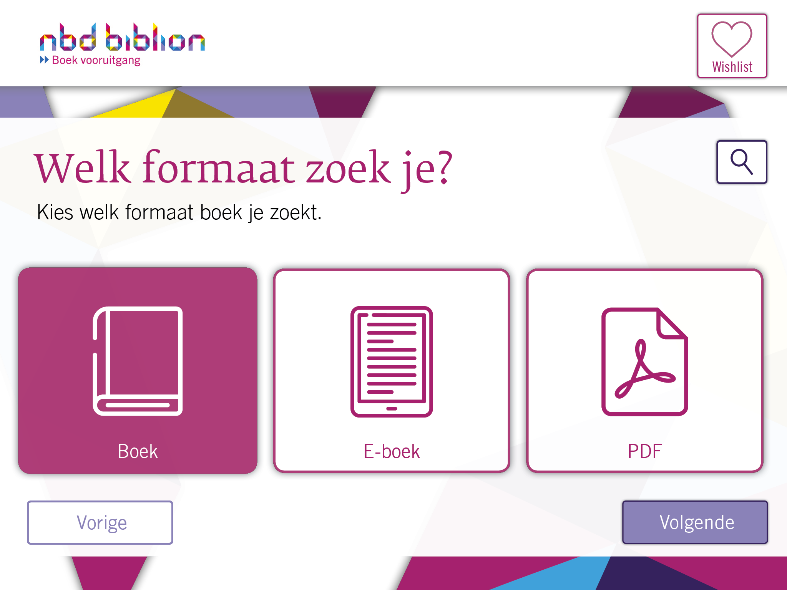
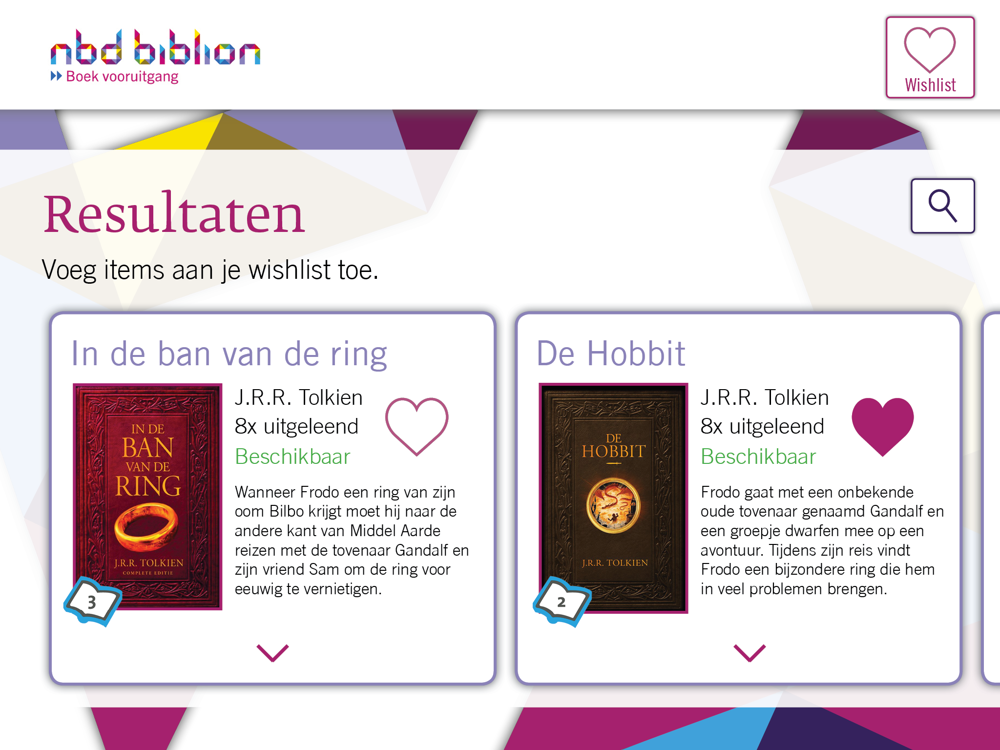
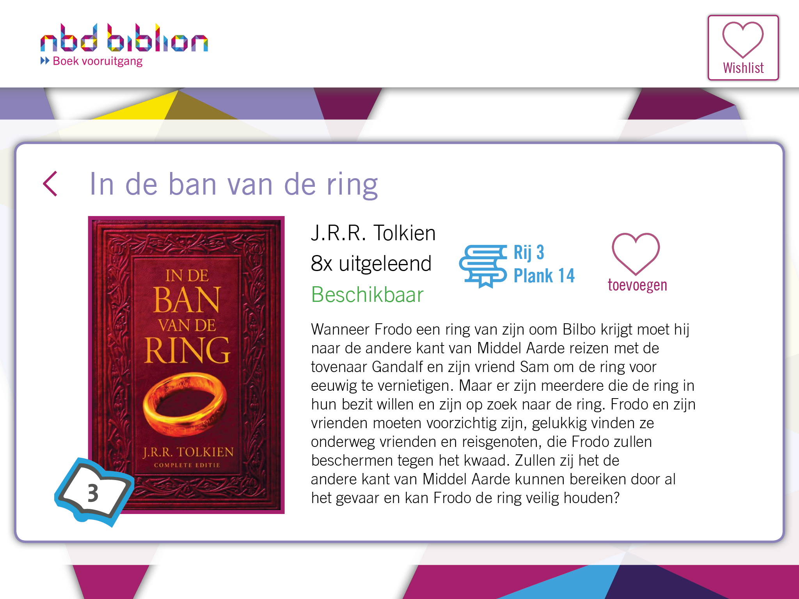
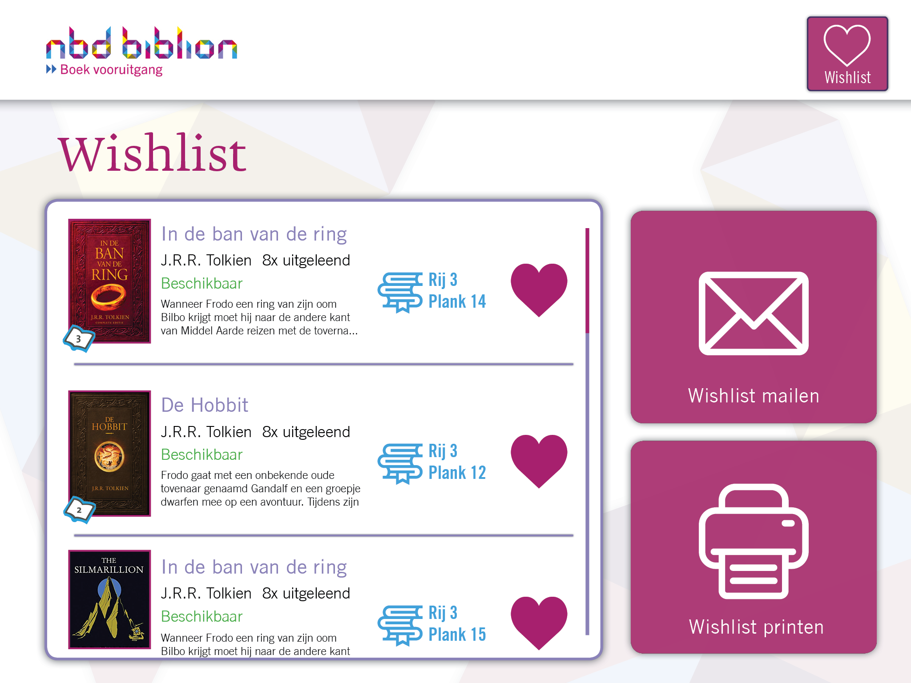

Evalueren
NBD Biblion
Voor het vak Visual Interface Design heb ik een boekenzoeker voor NBD Biblion gemaakt voor iPad, waarmee kinderen gemakkelijk boeken konden opzoeken in de bibliotheek. De focus van dit protoype lag vooral bij bewuste ontwerpkeuzes maken en het toepassen van bepaalde ontwerpprincipes, zodat de interface vanzelfsprekend en makkelijk in gebruik is.
Situatie
De opdrachtgever voor dit project was NBD Biblion, zij vroegen om een systeem dat vriendelijk is voor kinderen waarmee zij gemakkelijk boeken konden vinden in de bibliotheek.
Taak
De focus van deze opdracht was vooral het toepassen van de bestaande NBD Biblion huistijl en deze relevant te maken voor hun jeugdige bezoekers.
Activiteiten
Voor het ontwerp van dit concept heb ik door het gehele project heen de huisstijl van NBD Biblion onderzocht en geprobeerd op verschillende manieren toe te passen. Ook inspiratie zoeken bij andere soortgelijke platformen en de uitwerkingen van medestudenten hebben ervoor gezorgd om het ontwerp zo te maken zoals deze uiteindelijk is geworden.
Resultaat
Naar mijn idee is het ontwerp van dit concept goed in de NBD Biblion huisstijl gebleven maar is deze toch aansprakelijk gemaakt voor de jeugd.
Reflectie
Voor dit project ben ik continue blijven experimenteren met de vormgeving en de manier van interactie, ik denk dat het eindproduct daardoor een beter resultaat heeft bereikt, in plaats van dat na het eerste ontwerp ging testen om het concept zelf te verbeteren.
     